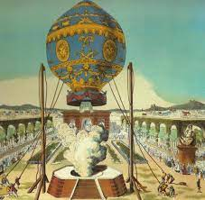

Depuis Léonard de Vinci au XVe siècle, l’Homme rêve de s’élever dans les airs. Le siècle des Lumières va enfin y parvenir. Joseph et Étienne Montgolfier ont entamé en 1782 une série d’expériences autour d’une pièce de tissu gonflée par un feu . Une démonstration les fait remarquer de l’Académie royale des sciences qui les appelle à renouveler leur expérience à Paris.
Étienne se livre en 1783 à un premier essai concluant. Lors de son second essai le ballon se déchire. Il mesure 18,47 m de haut sur 13,28 m de large et pèse 400 kg. Il est nommé Le Réveillon, en l'honneur de l'ami d'Etienne: Jean-Baptiste Réveillon, directeur de la Manufacture royale de papiers peints. Celui-ci a réalisé un décor à fond bleu azur aux chiffres du roi – deux « L » entrelacés – reliés par divers ornements, le tout doré.
La démonstration a lieu devant Louis XVI et la famille royale, dans l’avant-cour du Château, noire de monde. Pour le premier vol, des animaux ont été choisi par précaution. Le ballon s’élève, à la stupéfaction et sous les acclamations du public. Il monte à 600 m. Endommagé par une déchirure, il descend lentement huit minutes plus tard, après avoir parcouru 3,5 km.
Les animaux sont recueillis par Jean-François Pilâtre de Rozier, physicien et futur aéronaute. Ils sont vivants. L’expérience est un succès. En guise de récompense, les animaux, véritables héros des airs, sont recueillis par Louis XVI à la ménagerie de Versailles. L’expérience est renouvelée, avec des hommes cette fois, devant le Dauphin au château de La Muette, le 21 novembre. Pilâtre de Rozier devient le premier homme d’un vol habité.